Intro
This interactive worksheet will walk you through a series of mini-challenges designed to demonstrate some of the many aesthetic adjustments you can make to a ggplot2 graph for readability and pizzazz.
The exercises below heavily reference the official ggplot2 textbook. The textbook is not a cookbook for producing any type of plot, but I recommend it to any R users looking to gain first-principles fluency with ggplot2’s design philosophy and how its features are structured.
Similarly, this worksheet does not demonstrate every possible ggplot aesthetic modification (and you really can adjust nearly every feature of a plot with ggplot2!). The worksheet walks through common aesthetic changes I find myself using in my own plots, that I hope will apply to your plotting needs as well.
The exercises below assume a general comfort with adjusting ggplot2 code by adding new layers and changing the arguments specified within existing layers.
In particular, some exercises will provide a pre-coded base plot stored in a variable, and ask you to to add layers to the plot in that variable.
Other exercises will ask you to adjust the base code for a plot in order to change its appearance. (If you see the full base code written out in an exercise chunk, that’s your first hint that you will need to alter the code provided!)
Remember that constructing a whole multi-layered ggplot in one call is roughly equivalent to constructing the base layers of that plot, assigning the plot to a variable, and then adding another element to that variable. So these two chunks should produce identical plots:
# Building the whole plot at once
iris %>%
ggplot(aes(x = Species, y = Petal.Length, fill = Species)) +
geom_boxplot() +
theme_bw()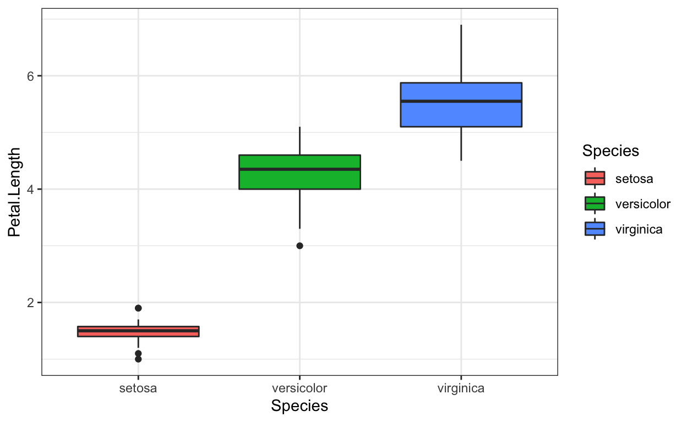
# Building just the base layers, storing in variable
plot_iris <- iris %>%
ggplot(aes(x = Species, y = Petal.Length, fill = Species)) +
geom_boxplot()
# Calling the base plot via variable, then adding layer(s)
plot_iris + theme_bw()
In this worksheet, you can assume the following:
- When a base plot variable is provided in an exercise chunk, you will not need to edit the base plot to complete that exercise. You will only need to add new layers
- The code that creates base plots will always be displayed in a read-only chunk for your reference
- When raw
ggplot2code is provided in an exercise chunk, you will need to edit the base plot to complete that exercise. You may also need to add new layers, but not necessarily
Modifying titles of plot elements
The default axis/legend title in ggplot2 is the name of the variable displayed on that axis/legend. While you yourself will know what these variable names mean in your data, in any graph that you will ever show to another person, you will want to re-label axes/legends and add a title to make your plot more readable. ggplot2 comes with an all-purpose function, labs(), that will allow you to edit the titles of pretty much any plot element (and figure captions).
To illustrate this, we will look at the iris dataset collected by botanist Edgar Anderson (1935), which measures the flower dimensions of several exemplars of 3 iris species.
Use the labs() function as demonstrated in Section 8.1 of the textbook to add the following titles shown below on the solution plot:
- x-axis: “Iris species”
- y-axis: “Petal length (cm)”
- legend for fill color: “species”
- plot title: “Iris petal length by species”
- plot subtitle: “Three species”
Hint: You only need to call labs() once to set all of these labels.
plot_iris <- iris %>%
ggplot(aes(x = Species, y = Petal.Length, fill = Species)) +
geom_boxplot()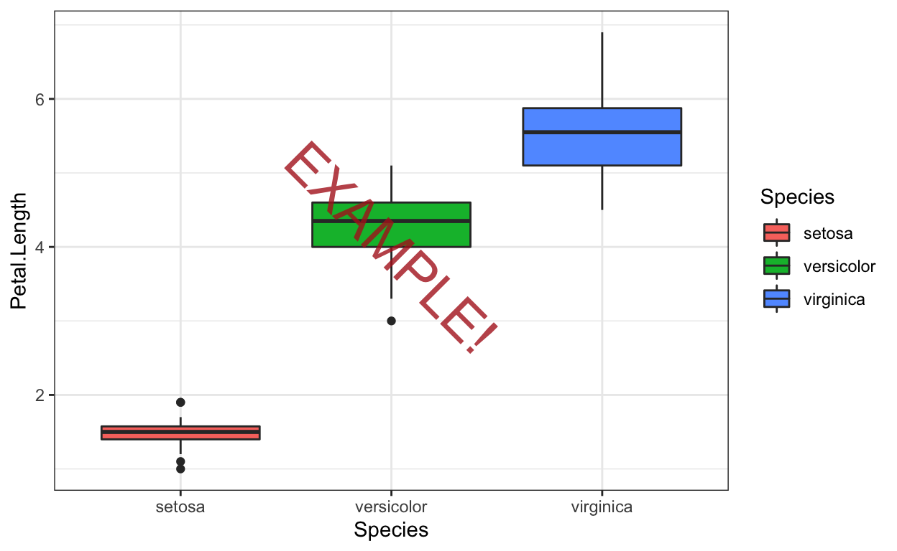
plot_irisModifying axis labels of discrete variables
Sometimes, in addition to editing axis titles, you will also want to edit the level labels of a discrete variable to improve readability. For example, if you have a binary gender variable coded as “F” and “M” plotted on one axis, you may want to have the plot say “Female” and “Male” instead.
Use the function & argument demonstrated in section 10.3.2 of the textbook to change the labels of the iris species to their common names (per Wikipedia) instead of their taxonomic names:
- Iris setosa -> “Bristle-pointed iris”
- Iris virginica -> “Virginia iris”
- Iris versicolor -> “Blue flag iris”
Hint: In the example graph, the discrete labels are on the y-axis, but in this graph, the discrete labels are on the x-axis.
plot_iris_labeled <- plot_iris +
labs(x = "Iris species",
y = "Petal length (cm)",
fill = "species",
title = "Iris petal length by species",
subtitle = "Three species")
plot_iris_labeledModifying axis label appearance for readability
When plotting a discrete variable along one axis (in these examples, the x-axis), it often makes sense to change the order of variable levels along that axis so that the order of variables along the axis adds meaning to the plot.
To illustrate this more clearly, let’s look at a different dataset now: the area (in square miles) of the 50 US states. This dataset helps illustrate the benefits of the next few techniques, in particular because it has a lot of levels (50!) of a discrete variable.
us_states_by_area <- tibble(state = datasets::state.name,
abbrev = datasets::state.abb,
area = datasets::state.area,
region = datasets::state.region,
division = datasets::state.division)These next exercises demonstrate features you might use when plotting discrete data with many levels.
First, if we plot a lollipop plot with state on the x-axis, and area on the y-axis, we can reap the benefits of both bar graphs and point graphs for this type of magnitude data. (The lines help illustrate the magnitude of each state’s area, like a bar graph, but the skinniness of the lines and the “lollipop” points on top of each line make it easier to compare the area of each state than it would be comparing wide bars on a bar graph.)
plot_us_states_by_area <- us_states_by_area %>%
ggplot(aes(x = state, y = area)) +
# the stick of the lollipop
geom_segment(aes(xend = state, y = 0, yend = area)) +
# the candy of the lollipop
geom_point()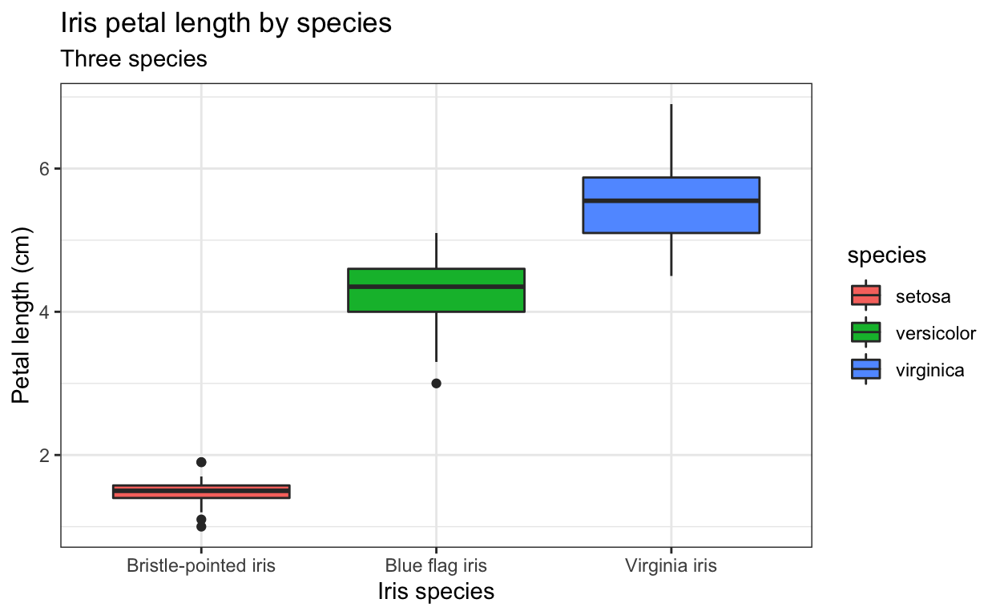
The state names along the x-axis are unreadable because they are written on top of each other! Next, we’ll practice a few techniques for adjusting the axis labels for levels of a discrete variable that specifically mitigate overplotted labels like these.
Rotating axis labels
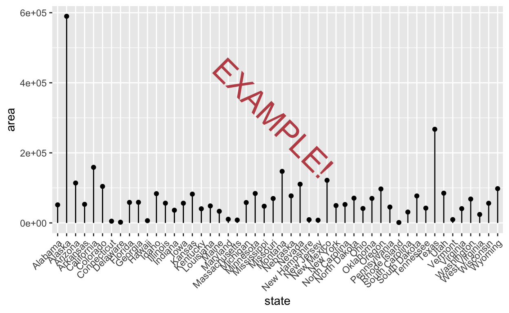
Use one of the functions demonstrated in section 10.3.3 of the textbook to rotate the axis labels for the state names by 45 degrees counter-clockwise. (The labels should appear to be right-justified to the axis.)
plot_us_states_by_area
Now, use the same function to rotate the axis labels for the state names by 45 degrees clockwise instead. (The labels should appear to be left-justified to the axis.)
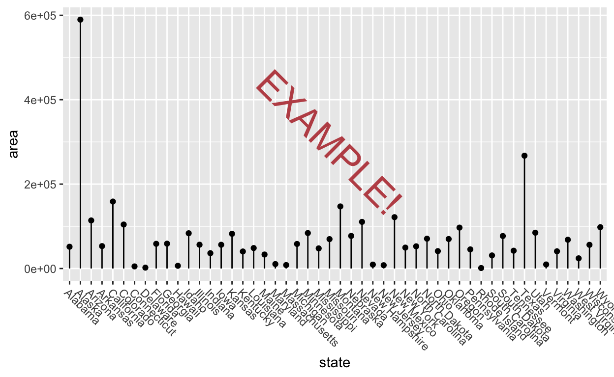
plot_us_states_by_area
Dodging axis labels
Now, use another function demonstrated in section “dodge” the axis labels by a factor of 5 so that state name labels are jittered into 5 rows.
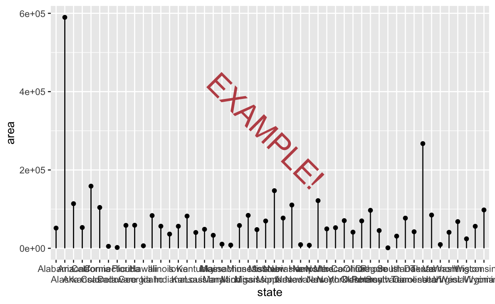
plot_us_states_by_areaAs you can see, for these data, dodging into as many as 5 rows still doesn’t fully stop the state names from plotting on top of one another, and it’s hard to tell which lollipops the labels in the lower rows are referring to. For this reason, I usually prefer rotating axis labels over dodging them, but either might be the best choice depending on the plot. We’ll use counterclockwise-rotated axis labels for the rest of the plots in this section.
Reordering levels of a discrete variable
From our current plot, we can get information about smaller and larger states, but the order is not very sensible. To see the very largest states, a graph reader can go to the tallest lollipops and then look down to the axis label, but they have to jump around from lollipop to lollipop because the states are ordered alphabetically along the x-axis, not by area.
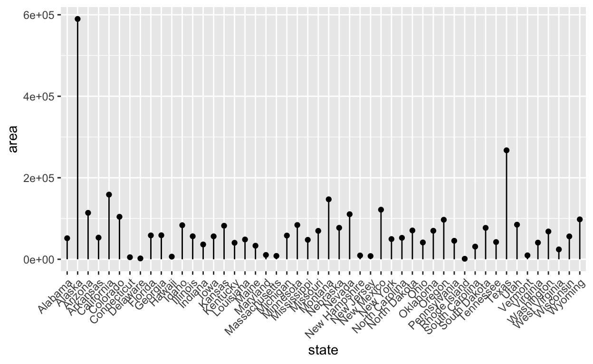
Use the function demonstrated in the forcats package vignette: Ordering by another variable to reorder the states along the x-axis by area from smallest to largest.
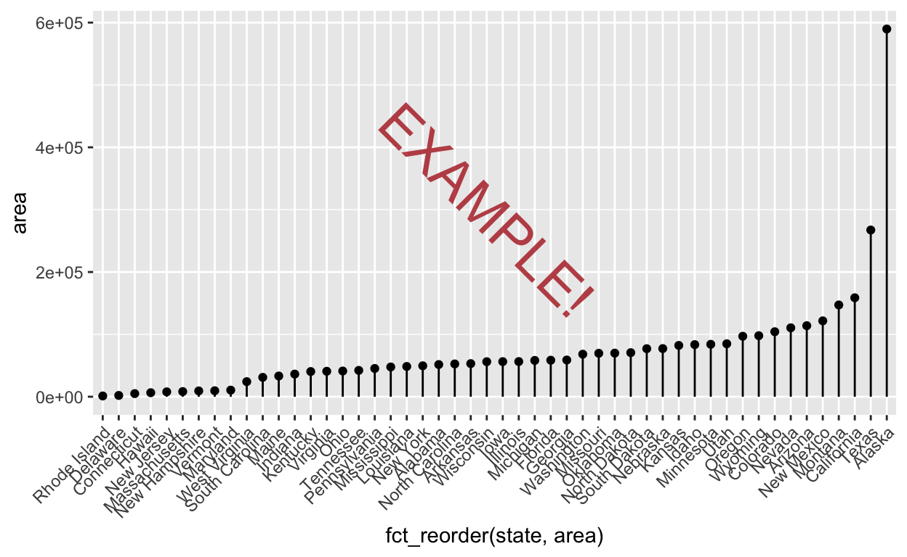
us_states_by_area %>%
ggplot(aes(x = state, y = area)) +
geom_point() +
scale_x_discrete(guide = guide_axis(angle = 45))Now, refer to the function’s docs and use another argument to flip the reordering, so the states are ordered from largest to smallest instead.
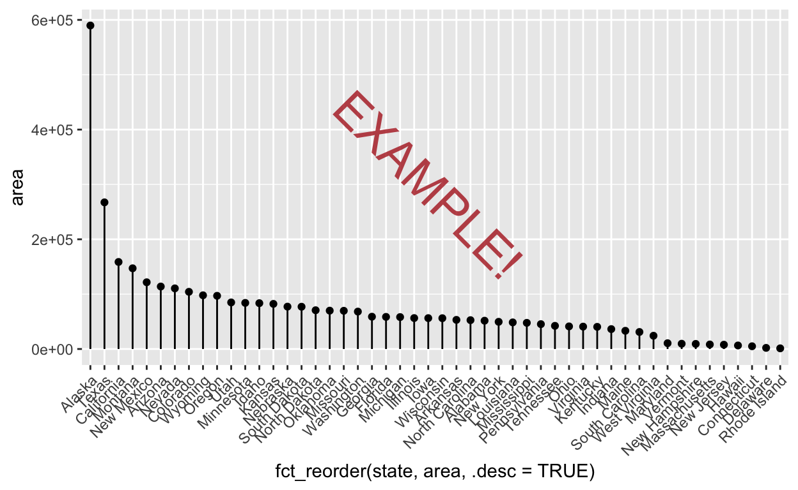
us_states_by_area %>%
ggplot(aes(x = state, y = area)) +
geom_point() +
scale_x_discrete(guide = guide_axis(angle = 45))Bonus exercise: Since the x-axis label looks pretty gnarly now because of the code used to reorder states along the x-axis by their area, and we should re-label axes and title our plot anyway, use labs() to relabel the plot of US states by area to match the solution plot below.
plot_us_states_by_area_angled_reordered <- us_states_by_area %>%
ggplot(aes(x = fct_reorder(state, area), y = area)) +
geom_segment(aes(xend = state, y = 0, yend = area)) +
geom_point() +
scale_x_discrete(guide = guide_axis(angle = 45))
plot_us_states_by_area_angled_reordered
Adjusting continuous axis limits
Since the last few exercises demonstrated aesthetic adjustments you might make to discrete variables, next we’ll look at some adjustments you might make on continuous variables.
For these, we’ll pivot back to the iris flower size data from the beginning of the worksheet. We’ll now turn to adjusting aesthetics along the y-axis, representing the continuous variable of iris petal length in centimeters.
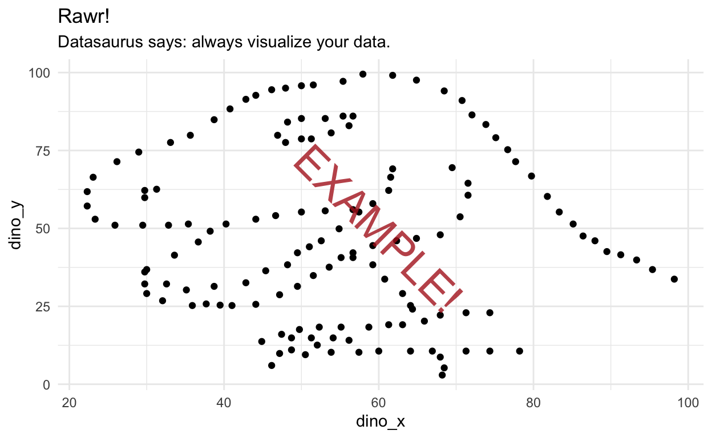
Expanding axis limits to include a certain value
ggplot2, like most plotting software, automatically sets the axis limits of a graph based on the range of the data. However, careful plotters know that axis limits must be selected carefully as to faithfully represent the effect sizes present in the data!
One common axis limit change you might make is to expand limits to include 0. If you have a variable for which 0 carries meaning, it can be helpful to see where 0 is relative to your data.
Referring to the function docs, use the ggplot2 function expand_limits() to show 0 on the y-axis.
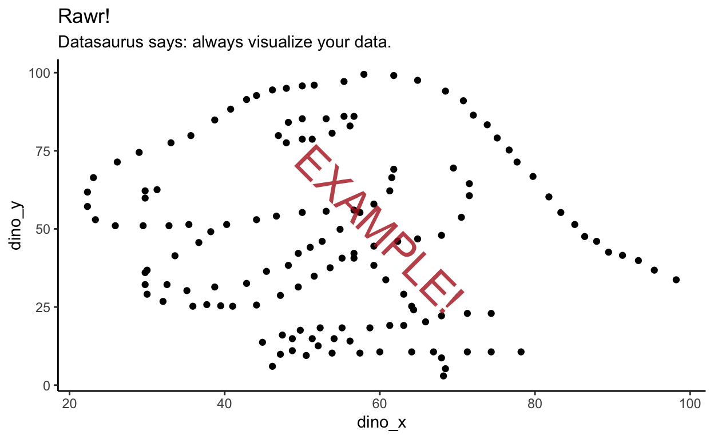
plot_iris_labeled_commonname
One big benefit of expand_limits() is that you don’t need to know anything about the actual range of your data. You just have to tell the function what value you want to include on the axis, and your ggplot will show that number as well as the rest of your data.
Changing axis limits to preset bounds
Sometimes, you may want to change your axes to “zoom” your plot to a specific range of values. You may want to zoom in (to stop showing outliers), or to zoom out to meaningful start and end bounds.
Referring to section 10.1.2 of the textbook, use the “zooming” limit adjustment function (NOT the one that will trim data if they fall outside of the limits!) to change the y-axis bounds to 0 on the lower end and 8 on the higher end.
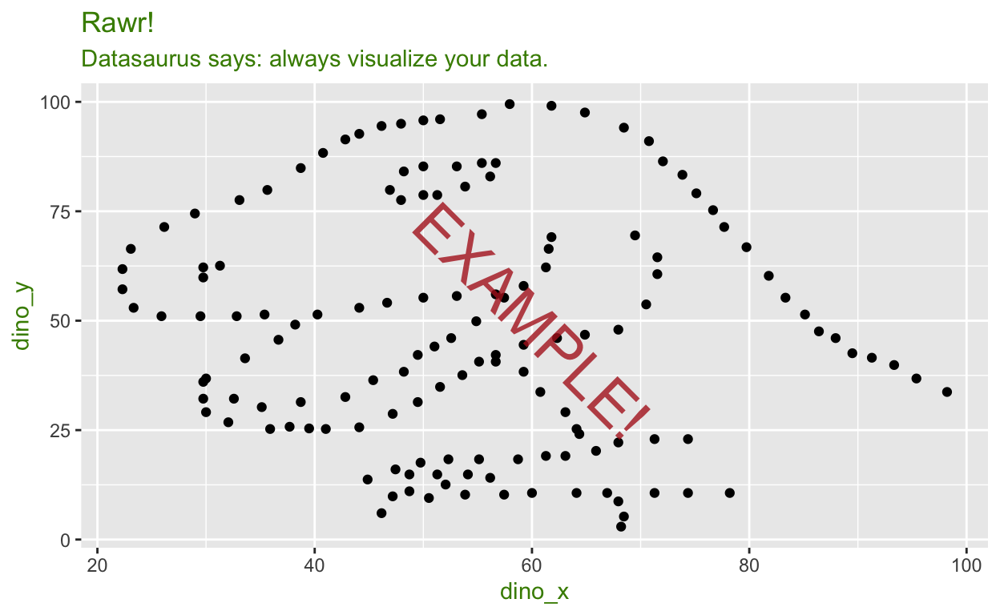
plot_iris_labeled_commonname
Scaling continuous axes
Sometimes, you don’t want to edit the bounds of a continuous axis, but you do need to change its scaling.
To illustrate this use case more clearly, we’ll step away to a different dataset: the vital characteristics of key Star Wars characters from the 9 movies in the Skywalker saga. Here, we’ll focus on plotting a histogram of characters’ masses in kilograms (yes, apparently they use the metric system in a galaxy far, far away).
plot_starwars_mass <- starwars %>%
filter(!is.na(mass)) %>%
ggplot(aes(x = mass)) +
geom_histogram(bins = 30) +
labs(x = "Character mass (kg)",
y = "Number of characters",
title = "Histogram of Star Wars characters' masses",
subtitle = "Episodes I-IX")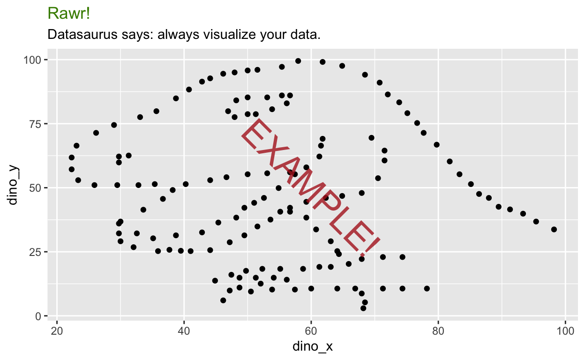
Jabba the Hutt is far and away the heaviest character (all that organized crime pays for a very luxurious diet), which is pushing all of the lighter characters into just a few histogram bins.
To address this, use one of the convenience functions demonstrated in section 10.1.9 of the textbook to show x-axis tick labels on the log-10 scale.
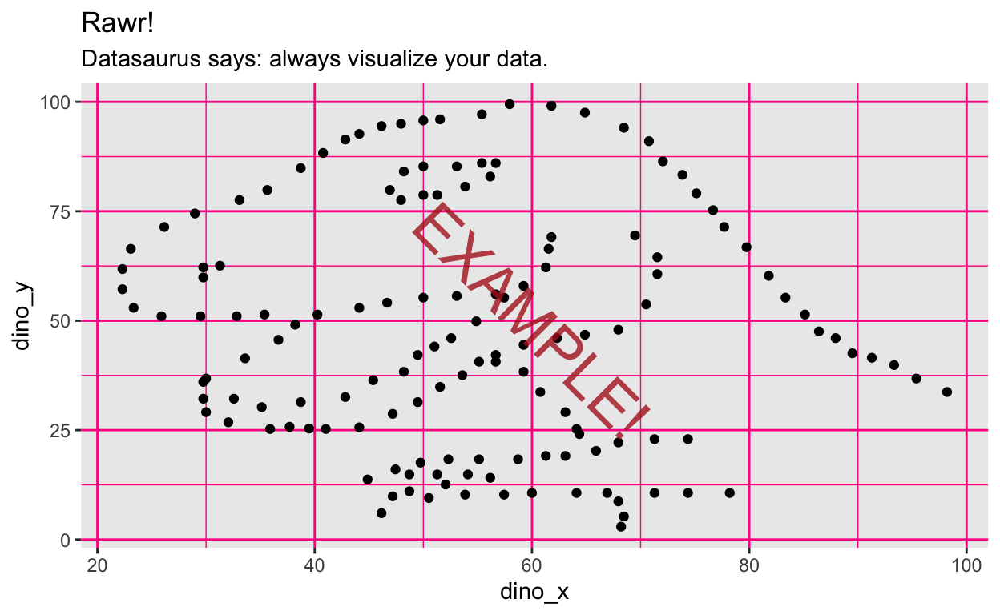
plot_starwars_mass
Altering continuous axis breaks
This histogram of Star Wars’ characters’ masses is also useful to illustrate situations where you might want to change the values at which grid lines appear along a continuous axis. I might do this if a histogram has short enough bins that some of the default y-axis grid lines occur at fractional values. Fractional grid lines aren’t useful for count variables (you can’t have 0.5 of an observation), so it’s handy to adjust grid lines in that case.
For example, along the y-axis of the histogram of Star Wars’ characters’ masses, the minor (non-numbered) y-axis grid lines appear to occur between the 5s and the 0s. There will never be 2.5 people in any of the bins, so we’ll try a few different strategies to change where the grid lines hit so they only hit round numbers.
Set axis break width
First, use scales::breaks_width() to set the major breaks to occur on the 10s, as shown in section 10.1.5 of the textbook.
plot_starwars_mass_log10 <- plot_starwars_mass +
scale_x_log10()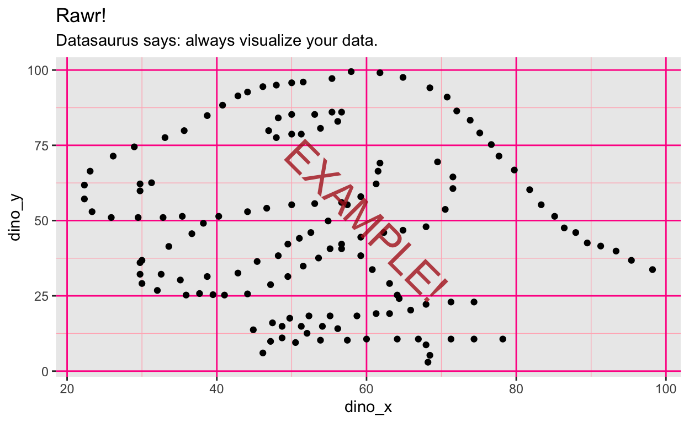
plot_starwars_mass_log10
Set number of major breaks
Next, use scales::breaks_extended() to redraw the y-axis grid lines with 12 major grid lines, as demonstrated in the same textbook section as the previous exercise.
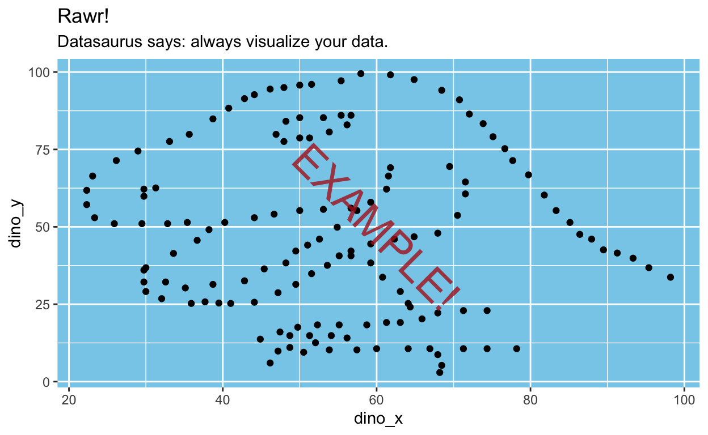
plot_starwars_mass_log10
Manually set break values
Next, use seq() (NOT a ggplot2 smart-breaks function!) to create a vector stepping from 0 to 20 in steps of 4 to manually draw the y-axis major breaks at 0, 4, 8 … 20.
Hint: This will be a little different than the previous two, but if you had to guess how the code would look, try that!
Hint 2: You will need to manually assign the vector to the breaks argument of scale_y_continuous.

plot_starwars_mass_log10
Changing colors of data elements
Applying pre-made color schemes
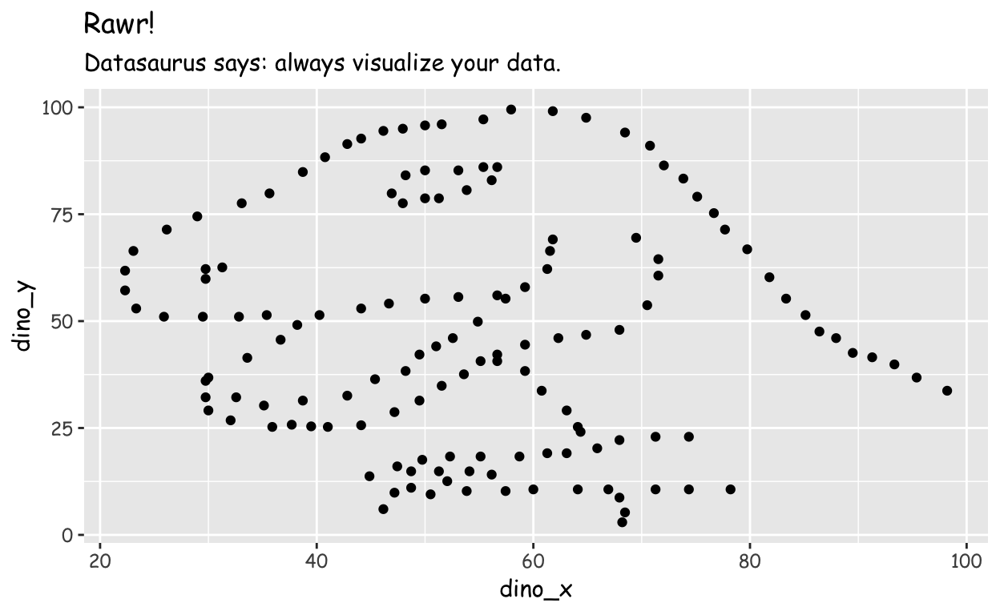
us_states_by_area %>%
ggplot(aes(x = fct_reorder(state, area), y = area)) +
geom_segment(aes(xend = state, y = 0, yend = area)) +
geom_point() +
scale_x_discrete(guide = guide_axis(angle = 45))Applying custom color schemes
us_states_by_area %>%
ggplot(aes(x = fct_reorder(state, area), y = area, color = region)) +
geom_segment(aes(xend = state, y = 0, yend = area)) +
geom_point() +
scale_x_discrete(guide = guide_axis(angle = 45))plot_datasaurus <- datasauRus::datasaurus_dozen_wide %>%
ggplot(aes(x = dino_x, y = dino_y)) +
geom_point() +
labs(title = "Rawr!",
subtitle = "Datasaurus says: always visualize your data.")Adjusting heatmap-like colors
Changing overarching theme
Add a theme command to render this plot in ggplot2’s dark-on-light theme.

plot_datasaurus
Now, add a theme command to render this plot in ggplot2’s “minimal” theme.

plot_datasaurus
Now, add a theme command to render this plot in ggplot2’s “classic” theme (designed to look like base R’s default plots).

plot_datasaurus
Modifying text aesthetics
From this section to the end, we will be adjusting the appearance of various theme elements. This includes the color, size, thickness, transparency, and basically every other non-data feature of a plot.
This section will demonstrate changing some theme elements, but is not an exhaustive example of every modifiable theme element. For that, refer to section 18.4 of the textbook.
Changing text color
First, we’ll practice changing the color of text labels on the plot.
Change the color of all text elements on the plot to “chartreuse4”.

plot_datasaurus
Change the color of just the plot title to “chartreuse4”.

plot_datasaurus
Changing fonts
Change all the text on the plot to use the font Comic Sans MS.

plot_datasaurus
Again, change all the text to Comic Sans MS font, and change the plot’s subtitle to appear in bold font face.

plot_datasaurus
Changing text size
Use rel() to make the axis tick labels (on both axes) appear 2x as big as its usual “parent” size.

plot_datasaurus
Modifying grid line aesthetics
Changing grid line color
Change the color of all grid lines on the plot to “deeppink”.

plot_datasaurusNow, change the color of the major (thicker) grid lines to “deeppink”, and the minor (thinner) grid lines to “lightpink”.

plot_datasaurus
Modifying background (rectangle) aesthetics
Changing inner plot background color
Change the background of the plot panel (the square with the data in it, not the background where the title/axis labels are printed) to the fill color “skyblue”.

plot_datasaurusChanging full background color
Now, change the background of the entire plot (the background where the title/axis labels are printed) to the fill color “skyblue”.

plot_datasaurus
Modifying panel border
Change the the border of the panel background (the panel containing the data) to the color “navyblue”.

plot_datasaurus